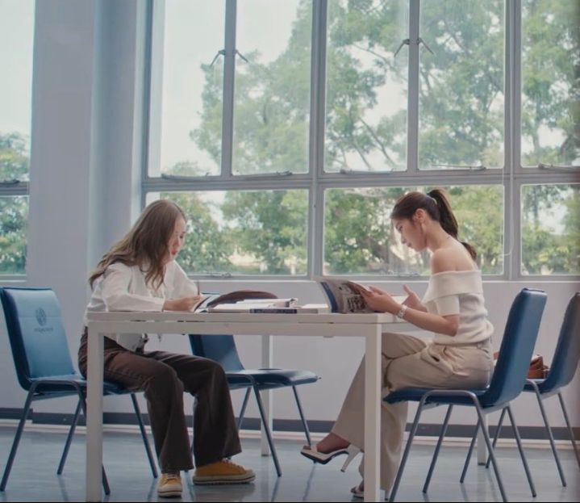
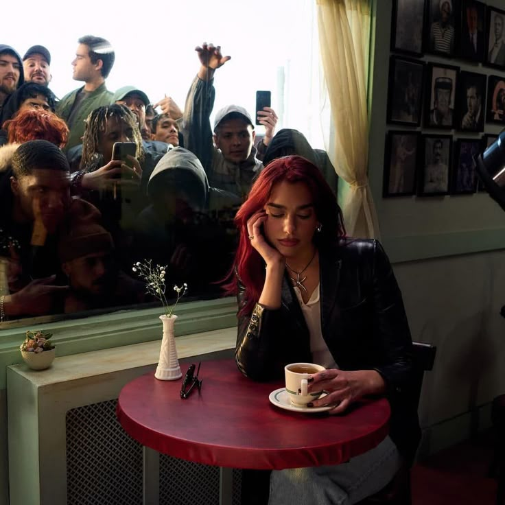

¿FUE UN FRAUDE?
En la más reciente edición de los Seoul Music Awards, el grupo ALLDAY PROJECT sorprendió al llevarse un Daesang, algo poco común
tratándose de un grupo tan nuevo. Su victoria ha desatado numerosas críticas: muchos acusan que está detrás un fraude impulsado
por el nepotismo, ya que una de sus integrantes, Annie, es nieta de Lee Myung-hee, presidenta del conglomerado Shinsegae, e hija
de Chung Yoo-kyung, quien ocupa un puesto ejecutivo en la misma empresa.Ademas de que su madre es hija del fundador de samsung

Love Design llega a su final
Este jueves se emitirá el último capítulo de Love Design, el popular dorama sobre dos arquitectas que se unieron para salvar
la empresa familiar. Aunque los fans han mostrado tristeza por el final, el equipo confirmó que habrá un episodio especial
con contenido exclusivo.
La historia narra cómo, entre planos, rivalidades y proyectos, una de ellas descubre un secreto que la hace comprender y
enamorarse de la otra, dejando atrás las disputas que las separaban. Ahora, los seguidores esperan que el especial ofrezca un
cierre aún más emotivo para esta pareja que conquistó a la audiencia.

DUA LIPA EN MEXICO Y YO SIN DINERO
La superestrella británica Dua Lipa ha confirmado su regreso a México como parte de su Radical Optimism Tour, con presentaciones
en la Ciudad de México el 1, 2 y 5 de diciembre de 2025 una de las cosas mas esperadas es que Dua lipa hable solamente español en
su concierto ya que se rumorea que la cantante tiene una sertificación en el idioma
